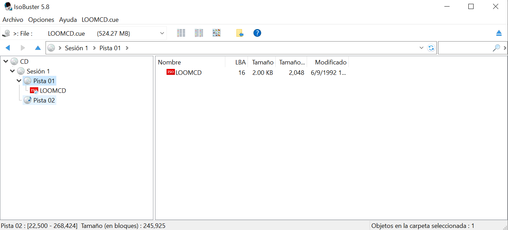
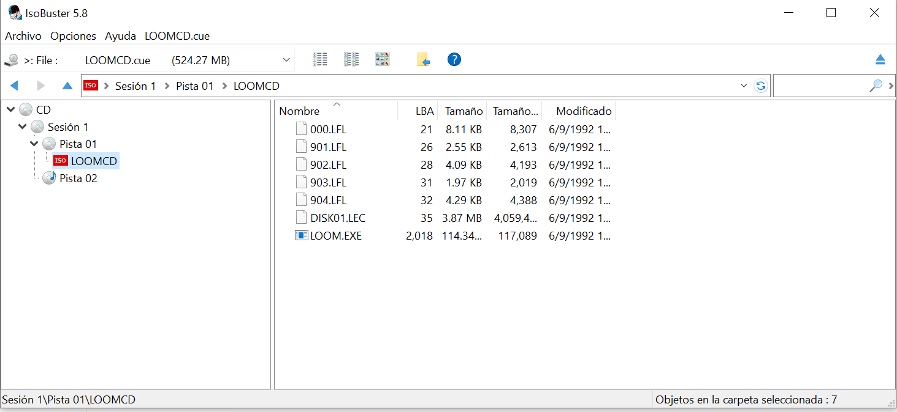
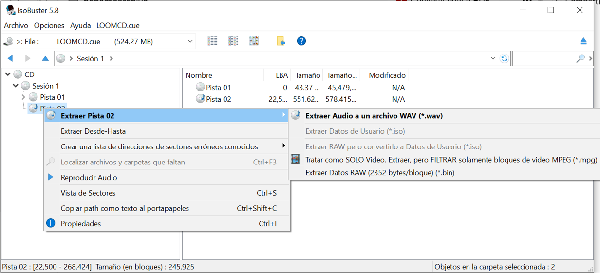
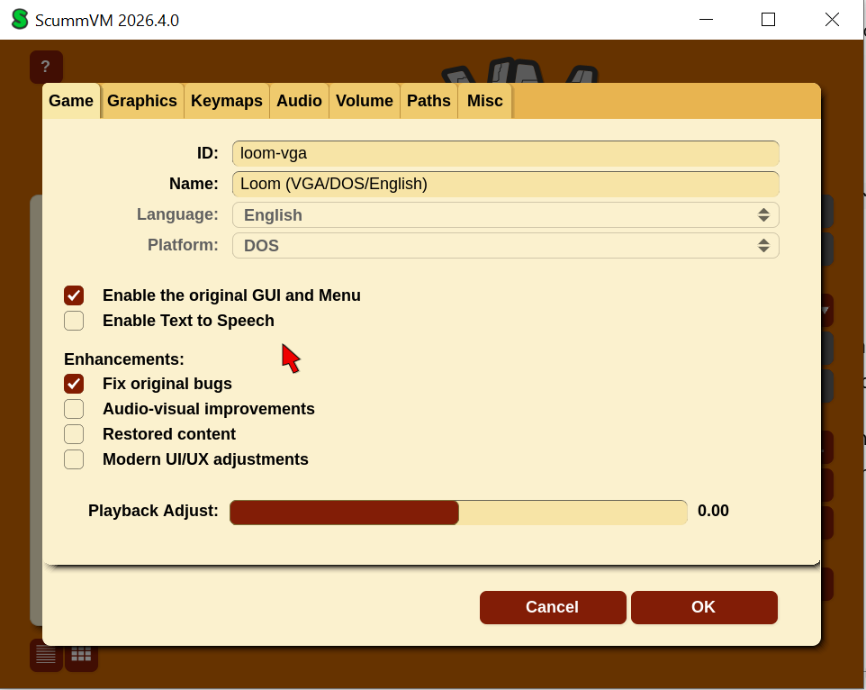
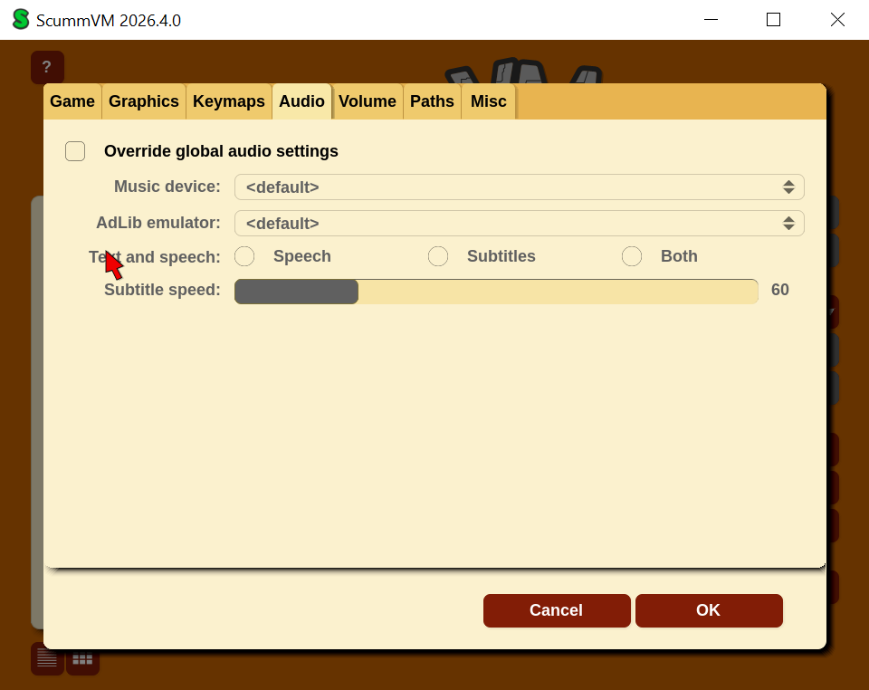

Esta guía documenta el procedimiento probado por PC Game Archive para ejecutar Loom en un sistema actual utilizando la edición estadounidense Jewel Case en CD-ROM conservada en PC Game Archive.
La secuencia final validada en Windows 10 Pro 22H2 ha sido: extraer la pista de datos y la pista de audio con IsoBuster 5.8 y ejecutar el juego con ScummVM 2026.4.0. No ha sido necesario aplicar parches, wrappers gráficos ni modos de compatibilidad de Windows.
Esta validación corresponde exclusivamente a la edición estadounidense Jewel Case de 1992 conservada por PC Game Archive. Otras ediciones de Loom, otros prensados del CD u otros sistemas pueden comportarse de forma diferente.
Resultado esperado
Siguiendo esta guía, en el entorno probado se obtuvo el siguiente resultado:
- detección correcta del juego como Loom (VGA/DOS/English);
- arranque correcto de la introducción;
- reproducción correcta de música, voces y efectos;
- interacción normal con personajes y objetos;
- guardado y carga correctos mediante el menú de ScummVM;
- regreso correcto al lanzador de ScummVM.
El estado de compatibilidad de esta edición se considera Funcional con ajustes, porque la ejecución final validada no parte de un montaje directo de la imagen BIN/CUE, sino de la extracción controlada de los archivos y de la pista de audio hacia una carpeta de trabajo para ScummVM.
Entorno en el que se ha validado
La prueba final se realizó en el entorno de referencia PCGA-LAB-01, con estas características principales:
- Windows 10 Pro 22H2 x64;
- build 19045.6466;
- AMD Ryzen 5 PRO 4650U;
- 16 GB de RAM;
- AMD Radeon(TM) Graphics;
- controlador gráfico 31.0.21921.11005;
- resolución 1920 × 1080;
- escalado de Windows al 150 %.
Qué necesitas
La copia de trabajo verificada
Esta guía parte de una copia de trabajo derivada del máster de preservación verificado de la misma pieza. Los ficheros utilizados fueron:
LOOMCD.BIN
LOOMCD.CUEHashes SHA-256 de referencia del conjunto probado:
LOOMCD.BIN 70BA458BAC6C7D656B188940493FCF57FD65930C0E0F70A683ED1D5129897BD4
LOOMCD.CUE F25600C48612C0FBB0B957F0F84E02FB2E916EA41DBA90B45D7E4A71F64DF312Puedes comprobarlos con PowerShell:
Get-FileHash .\LOOMCD.BIN -Algorithm SHA256
Get-FileHash .\LOOMCD.CUE -Algorithm SHA256IsoBuster 5.8
Se utilizó IsoBuster 5.8 para abrir la imagen BIN/CUE, acceder a la pista de datos y extraer la pista de audio a WAV.
Descarga oficial: IsoBuster.
ScummVM 2026.4.0
La ejecución final validada se realizó con ScummVM 2026.4.0, edición oficial para Windows.
Descarga oficial: ScummVM.
En el entorno probado se utilizó la versión ZIP de 64 bits, extraída de forma portable.
1. Preparar la copia de trabajo
- Crea una carpeta de trabajo separada del máster de preservación.
- Copia a ella
LOOMCD.BINyLOOMCD.CUE. - Verifica ambos hashes SHA-256 antes de comenzar.
- No modifiques el máster de preservación ni trabajes directamente sobre él.
Si quieres reproducir exactamente el flujo validado por PC Game Archive, puedes usar dos carpetas separadas:
ISO\loom-jewelcase-trabajo
ISO\LOOM_SCUMMVM2. Abrir la imagen con IsoBuster
- Abre IsoBuster 5.8.
- Selecciona Archivo → Abrir archivo de imagen.
- Elige
LOOMCD.CUE, no el BIN directamente. - Comprueba que IsoBuster reconoce una sesión con dos pistas: una de datos y otra de audio.
La estructura identificada por PC Game Archive fue la siguiente:

3. Extraer los archivos del juego
- En el panel izquierdo, abre
Pista 01. - Haz doble clic sobre
LOOMCDpara ver el contenido ISO9660. - Selecciona los siete archivos del juego.
- Extráelos a una carpeta nueva, por ejemplo
LOOM_SCUMMVM.
Los archivos extraídos en la validación fueron:
000.LFL901.LFL902.LFL903.LFL904.LFLDISK01.LECLOOM.EXE
La pista de datos aparece así en IsoBuster:

4. Extraer la pista de audio
- Selecciona
Pista 02en IsoBuster. - Elige **Extraer Pista 02 → Extraer Audio a un archivo WAV (*.wav)**.
- Guarda el resultado en la misma carpeta
LOOM_SCUMMVM. - Asigna el nombre
track1.wav.

Comprobación realizada: el archivo track1.wav obtenido ocupó 578.415.644 bytes. Este tamaño corresponde a los sectores de audio extraídos más la cabecera WAV; la reproducción se verificó después dentro del juego.
En la validación de PC Game Archive, track1.wav se extrajo correctamente y tuvo un tamaño coherente con la pista CDDA del disco.
5. Preparar ScummVM
- Descarga ScummVM 2026.4.0 desde su web oficial.
- Extrae el ZIP en una carpeta estable de tu equipo.
- Ejecuta
scummvm.exe. - Pulsa Add Game....
- Selecciona la carpeta
LOOM_SCUMMVMdonde están los siete archivos extraídos ytrack1.wav.
ScummVM debe identificar el juego como Loom (VGA/DOS/English):

6. Ejecutar Loom
- Acepta la detección de ScummVM.
- Mantén la configuración de audio por defecto, tal como se probó en el laboratorio.

- Selecciona Loom (VGA/DOS/English) en el lanzador.
- Pulsa Start.
En el entorno probado el juego arrancó correctamente y reprodujo música, voces y efectos sin incidencias.
7. Guardar, cargar y salir
Durante la validación se utilizaron los controles del menú de ScummVM:
Ctrl + F5: abrir el menú de ScummVM;Save: guardar partida;Load: cargar partida;Resume: volver al juego;Return to Launcher: regresar al lanzador;Quit: salir de ScummVM.
La prueba de PC Game Archive confirmó que el guardado, la carga y el regreso al lanzador funcionan correctamente.
Procedimiento final reproducible
Esta es la secuencia final validada, sin intentos descartados intermedios:
- Verificar los SHA-256 de
LOOMCD.BINyLOOMCD.CUE. - Abrir
LOOMCD.CUEcon IsoBuster 5.8. - Extraer los siete archivos del juego a
LOOM_SCUMMVM. - Extraer
Pista 02atrack1.waven esa misma carpeta. - Descargar y extraer ScummVM 2026.4.0.
- Añadir la carpeta
LOOM_SCUMMVMa ScummVM. - Ejecutar Loom (VGA/DOS/English) desde el lanzador.
- Guardar y cargar partida con
Ctrl + F5si se desea validar la persistencia.
Matriz de validación funcional
- Instalación:
No aplicable— no hay instalación tradicional; la ejecución validada se realizó desde archivos extraídos y ScummVM. - Arranque:
Correcto— ScummVM detectó y arrancó el juego sin incidencias. - Menús:
Correcto— menús del lanzador y del juego operativos. - Vídeos/cinemáticas:
Correcto— introducción reproducida correctamente en la prueba. - Gráficos 2D:
Correcto— escenarios e interfaz correctos. - Gráficos 3D:
No aplicable— el juego no utiliza gráficos 3D. - Sonido:
Correcto— efectos y voces correctos. - Música:
Correcto— música reproducida desdetrack1.wav. - Teclado/ratón:
Correcto— interacción y atajos de ScummVM funcionales. - Gamepad/joystick:
No probado— no se utilizó mando ni joystick. - Inicio de partida:
Correcto— se pudo iniciar una partida sin incidencias. - Juego representativo:
Correcto— interacción con personajes y objetos confirmada. - Guardado:
Correcto— guardado correcto desde el menú de ScummVM. - Carga:
Correcto— carga correcta desde el menú de ScummVM. - Cambio de nivel/escena:
Correcto— el avance probado no presentó problemas. - Multijugador:
No aplicable— Loom no dispone de multijugador. - Cierre:
Correcto— regreso al lanzador y salida correctos.
Limitaciones conocidas
- La guía está validada sobre la edición estadounidense Jewel Case de Loom conservada por PC Game Archive.
- El procedimiento final validado utiliza ScummVM y una carpeta de trabajo extraída desde la imagen BIN/CUE; no se ha validado aquí la ejecución desde un montaje directo del CD virtual.
- La validación se ha realizado en Windows 10 Pro 22H2 dentro del entorno PCGA-LAB-01.
Elementos no probados
- Otras ediciones o reediciones de Loom.
- Otros prensados del CD.
- Uso con gamepad o joystick.
- Partida completa de principio a fin.
Problemas descartados / intentos fallidos
Antes de llegar al procedimiento final se realizaron intentos que se descartaron:
- WinCDEmu 4.1 creó la unidad virtual, pero Windows no pudo acceder correctamente al contenido del CD mixto en el entorno probado.
- WinRAR no reconoció
LOOMCD.BINcomo formato utilizable para esta tarea.
Por ese motivo, la guía reproducible publicada por PC Game Archive se basa en IsoBuster + ScummVM, que fue la combinación finalmente funcional.
Fuentes externas utilizadas
Evidencias internas
- hashes SHA-256 de
LOOMCD.BINyLOOMCD.CUEcoincidentes con el máster de preservación; - detección correcta de la estructura del CD en IsoBuster;
- extracción correcta de los siete archivos de datos;
- extracción correcta de la pista de audio como
track1.wav; - detección del juego como
loom-vgaen ScummVM 2026.4.0; - prueba funcional de arranque, audio, interacción, guardado y carga.
Estado de compatibilidad
Funcional con ajustes.
La edición estadounidense Jewel Case de Loom conservada por PC Game Archive pudo ejecutarse correctamente en Windows 10 Pro 22H2 utilizando IsoBuster 5.8 para preparar la carpeta de trabajo y ScummVM 2026.4.0 para la ejecución final.
Relación con la preservación
Esta guía utiliza una copia de trabajo derivada del máster digital verificado de la misma pieza. El procedimiento de adquisición y verificación puede consultarse en el registro de preservación de Loom.
Última prueba: 02/11/2026.